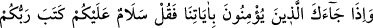

“Ümmetimden kendileriyle beraber candan sabretmemi emrettiği bir topluluk
yaratan Allah’a hamdolsun.” Ravi der ki: Sonra bizimle kendisini eşit yapmak için
aramıza oturdu ve eliyle işaret etti. Oradakiler de halka şeklinde oturdular. Hepsinin
yüzleri ona göründü. Ravi der ki: “Rasûlullah (a.s.)’in benden başka onlardan kimseyi
tanıdığını bilmiyorum.” Buyurdu ki:
“Ey fakir muhacirler topluluğu! Kıyamet günü erişeceğiniz tam bir kurtuluştan
dolayı size müjdeler olsun. Cennete zenginlerden yarım gün önce gireceksiniz. Bu
yarım gün ise beş yüz yıldır.”[109]
Bir hadiste şöyle buyurulmuştur: “Kıyamet günü fakir kul getirilir. Dünyada insanın
diğer insana özür dilediği gibi Allah (azze ve celle), bu kuluna özür diler ve der ki:
İzzetim ve celalime yemin olsun ki seni hor gördüğüm için dünyayı senden
uzaklaştırmadım, fakat sana hazırladığım ikram ve ihsandan dolayı böyle yaptım. Ey
kulum, şimdi şu safları dolaş. Benim rızamı kastederek seni yedirip giydireni ara.
Onun elinden tut. O, sana aittir.” O gün insanlar, ağızlarına kadar tere
boğulmuşlardır. Bu kimse, safları yarar. Dünyada iken kendisini yedirip giydireni
arayıp bulur. Elinden tutarak beraber cennete girerler.”[110]
Hâfız der ki:
Ey zengin kişi! Yoksulun gönlünü al
Çünkü altın mahzeni, gümüş hazinesi ebedî kalmayacak
Bu zebercetten kemere altınla şöyle yazmışlar:
Kerem ehlinin iyiliğinden başka hiç birşey kalmayacak
Hadis-i şerifte yine buyurulmuştur ki: “Her şeyin bir anahtarı vardır. Cennetin
anahtarı ise miskinleri sevmektir. Sabreden fakirler, kıyamet günü Allah ile
berâberdirler.”[111]
Şeyh Attar der ki:
Dervişleri sevmek, cennetin anahtarıdır
Onlara düşman olmak, lanete uğramaktır
Allah’ım, bizi sevdiklerinden eyle, kapından kovma.
54. Âyetlerimize inananlar sana geldiğinde onlara de ki: Selam size! Rabbiniz